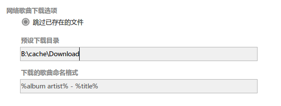
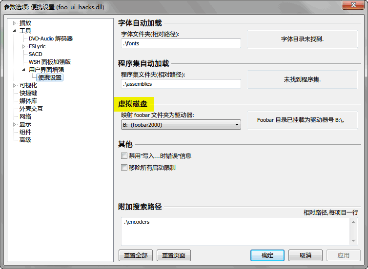
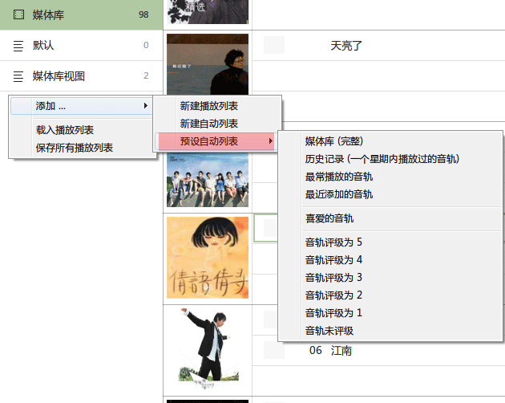
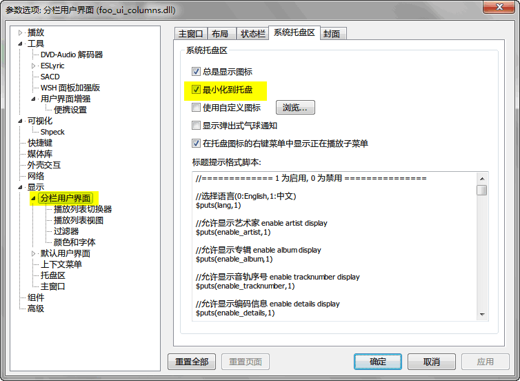
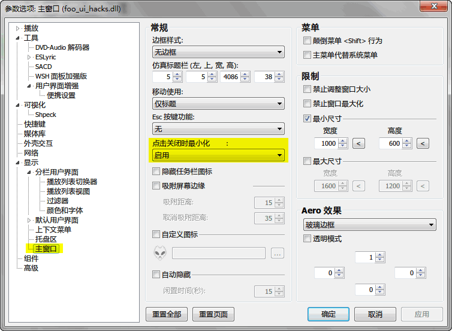

FAQ和使用小技巧
|
【输入框无效？】 重要一点：面板上所有输入框必须回车才能生效，输入后不要用鼠标点开，必须回车。  |
|
【为什么挂载到B盘？】 为使 foobox 实现完全便携化，默认整个目录挂载在B盘，请不要做修改，并确保是B盘。否则有些功能可能会出现异常。  |
|
【添加 QAAC 编码器】 foobox 在转换器里预设了比较受欢迎的 Apple QAAC 编码转换，但并没有集成编码器到安装包里，原因一是 Apple QAAC 的运行需要QT的运行库 CoreAudioToolbox， 二是 QAAC 可以选择32位和64位。下载下面的绿色包（已经包含运行库）手动添加到 fooar2000 里即可使用。 http://www.foobar2000.com.cn/component/showdownload.php?lang=cn&id=25 使用方法：把 qaac 目录（32位）或者 qaac64 目录（64位）下的文档复制到 foobar2000 下的 encoders 文件夹里。 |
|
【预设智能列表】 播放列表管理器右键菜单可新建常用的预设智能列表  |
|
【屏幕搜索】 foobox 的主要面板支持直接键盘输入即时搜索和定位歌曲，6.0 版完善了这一功能。 |
|
【顶栏搜索框】 顶栏强大的搜索框，有三种搜索源，当前播放列表，媒体库，网络。 |
|
【网络搜索】 在网络搜索模式下的右键菜单如图。 |
|
【播放列表小Tips】 * 播放列表视图中 F2 可以快速定位当前播放歌曲。 |
|
【封面浏览面板小Tips】 * 封面浏览面板右键菜单可以快速创建智能列表。 |
|
【关于评级】 歌曲标签里有评级信息，Windows文件管理器里都有显示，但是foobox显示不出来，怎么办？在媒体库列表里全选歌曲，然后右键，点击图中的“从文件标签导入统计信息”，歌曲的评级信息就能导入回来了！ foobox的音频评级默认使用playcount组件（数据文件记录），并没有写入音频文件的标签，如果需要写入文件，请在“foobox设置”里的“评级数据方案”更改设定。 |
|
【关于最小化或关闭到系统托盘】 foobox属于 CUI 配置，而并非默认用户界面 (DUI)，DUI的相关设置不起作用的。要设置关闭到系统托盘，请依次选中下面两图中高亮出来的选项。  |
---这仅仅是一些小提示，不定期更新，foobar2000 和 foobox 全面的功能请使用中体验和发掘--- |